Dataset
ALFWorld valid_seen. The runner's constructor mode was
named eval_out_of_distribution, but its configured data
path was not valid_unseen.
Claim-audited project record · Eduardo Cortes
Continuity of Mind began when Eduardo Cortes designed a Global-Workspace-style architecture that integrated a hackathon team's component-level research. He later implemented and evaluated that architecture in a separate, overlapping GenAI at Berkeley project sponsored by Block, Inc. CogAgentLab is the subsequent system for running it across environments, preserving evidence, diagnosing failures, and handing focused changes to coding agents for human review.
Historical evaluation · March 2025
W&B run vee8kzls records every game. The exported trajectory
agrees with the committed per-game results for games 1–138 and supplies
the final game outcome omitted by a local file-save ordering bug.
ALFWorld valid_seen. The runner's constructor mode was
named eval_out_of_distribution, but its configured data
path was not valid_unseen.
ALFWorld emitted one missing-solvable-key skip before exposing 139 executable games. All 139 appear in W&B and define the denominator.
Game 123's context-window error and game 139's 60-action failure are both counted. Failure IDs: 10, 29, 35, 52, 57, 69, 77, 79, 86, 93, 94, 107, 109, 121, 123, 124, 125, 139.
Architecture lineage
The hackathon combined team component research with Eduardo's GWT architecture and integration. Eduardo then implemented and evaluated the integrated system in a different but overlapping sponsored project. CogAgentLab later wrapped that runtime in a repeatable, multi-environment improvement system.
Hackathon phase · collaborative inputs
Eduardo designed and integrated the Global Workspace architecture using insights from the team's component work. The judged presentation covered design principles and component results, not the 139-game run.
Block-sponsored project · evaluated
In a separate, overlapping GenAI at Berkeley project, Eduardo implemented the integrated system and ran the evaluation; Yixiao Wang occasionally advised. Enhanced planning and active conceptual memory produced the recorded 121/139 result.
Post-graduation extension
Four environment adapters, persistent evidence, analyst traces, and coding-agent iterations turned the architecture into a research lab.
Configuration behind the 87.05% result
Episodic memory was not active in the full run. It was implemented and tested separately, but the 139-game result used enhanced planning plus conceptual memory.
Source boundary: the presentation names Eduardo Cortes, Aaron Zheng, Yixiao Wang, Bhaskar Mishra, Bingyi Chen, and Will Cai because the summit slot came from the original hackathon team. Per Eduardo's account, that credit line is not a map of contributions to the later evaluated implementation. The editable PPTX is not redistributed; all 17 rendered slides appear below.
Architecture provenance manifestBerkeley Agent Summit · summer 2025
These 17 slides are full-resolution renderings of the owner-supplied summit deck. Select any slide to open the original 1600×900 rendering. Slides 14–15 report the historical evaluation and smaller component experiments; slide 16 is explicitly a future direction, not part of the evaluated system.
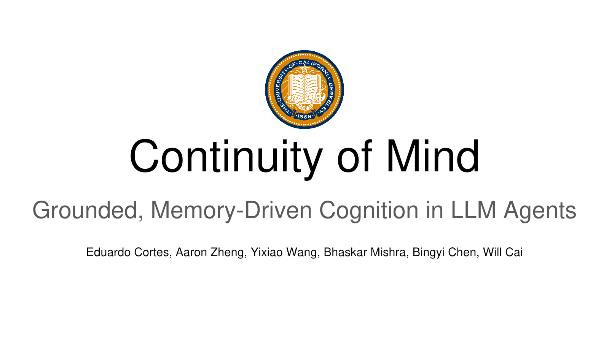
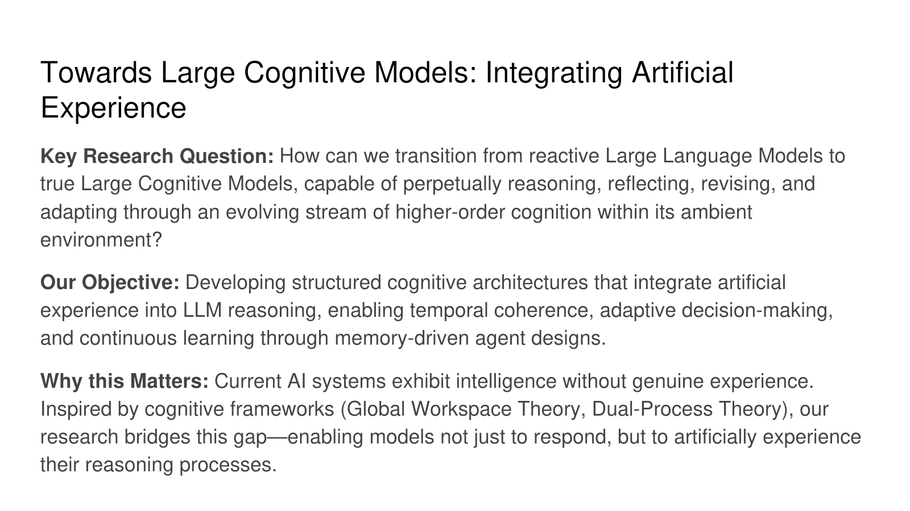
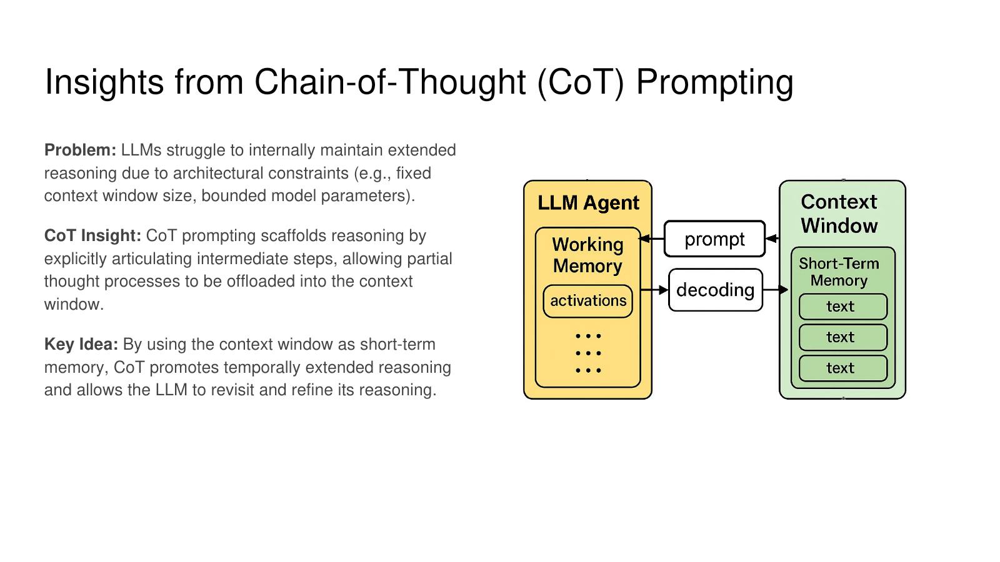
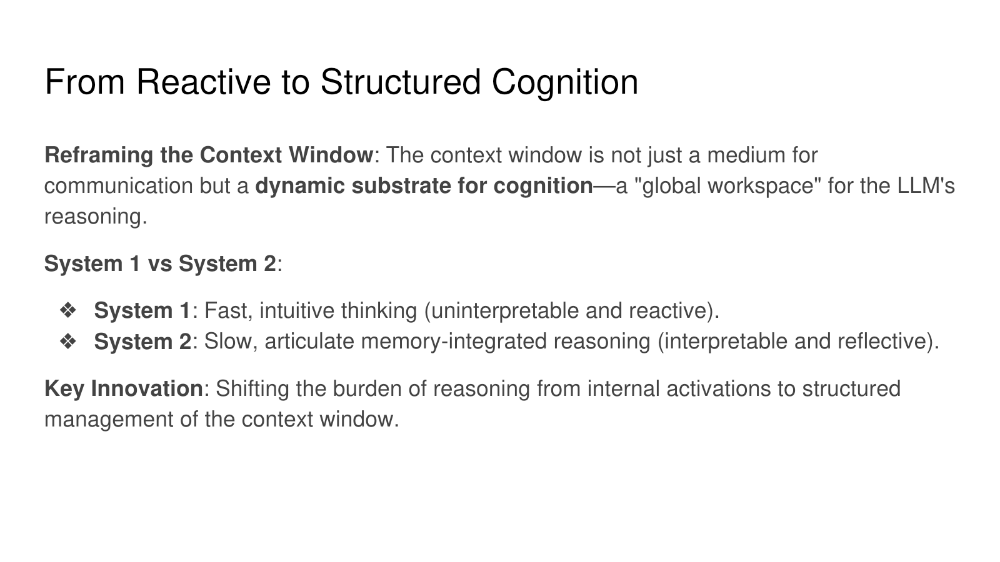
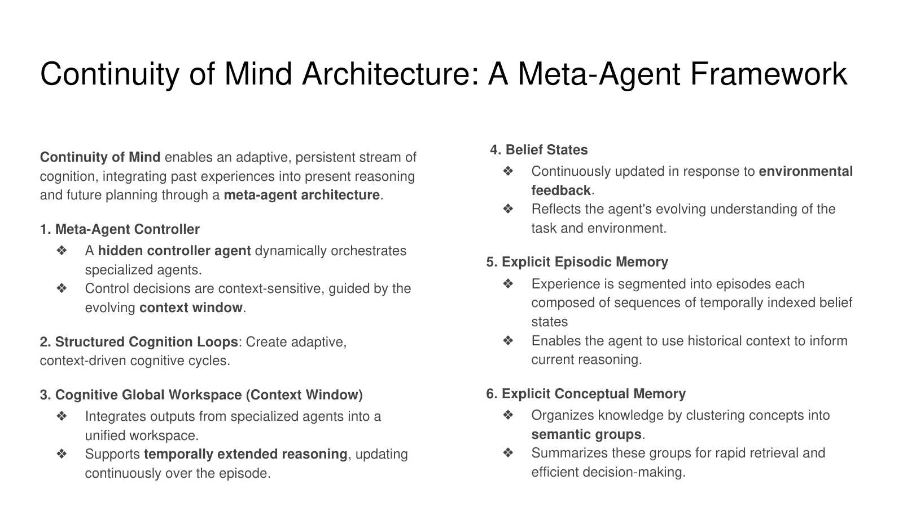

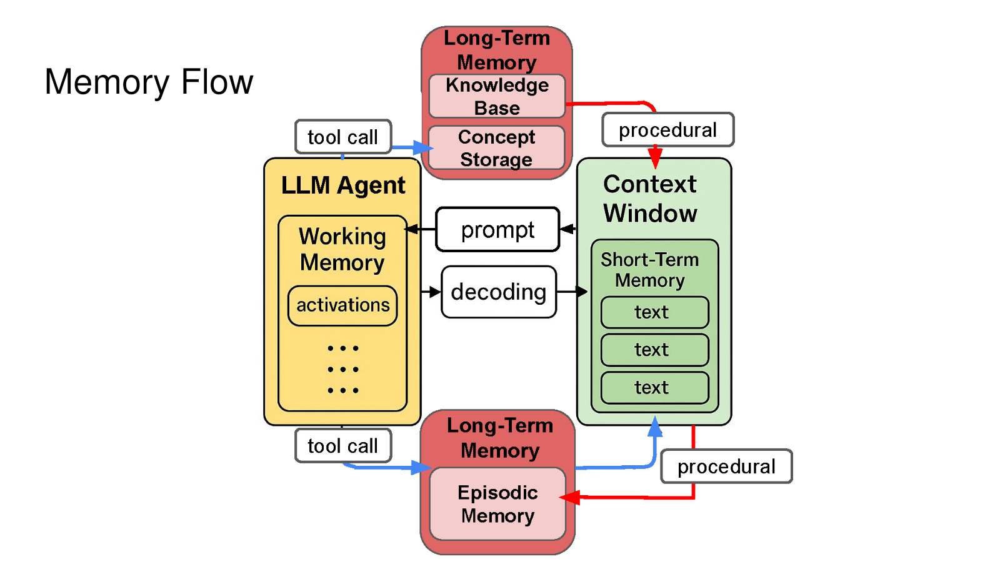
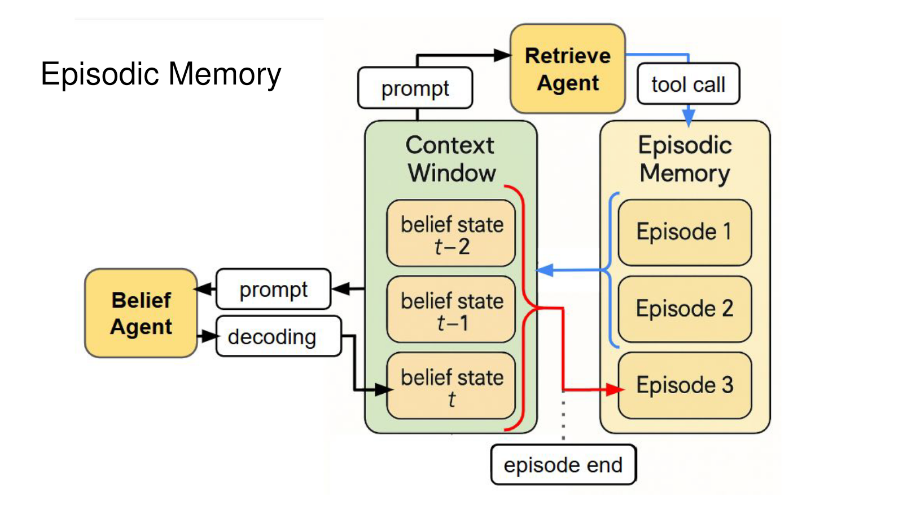
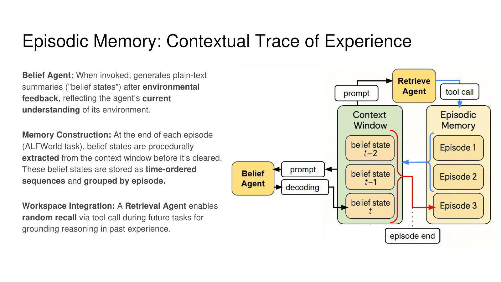

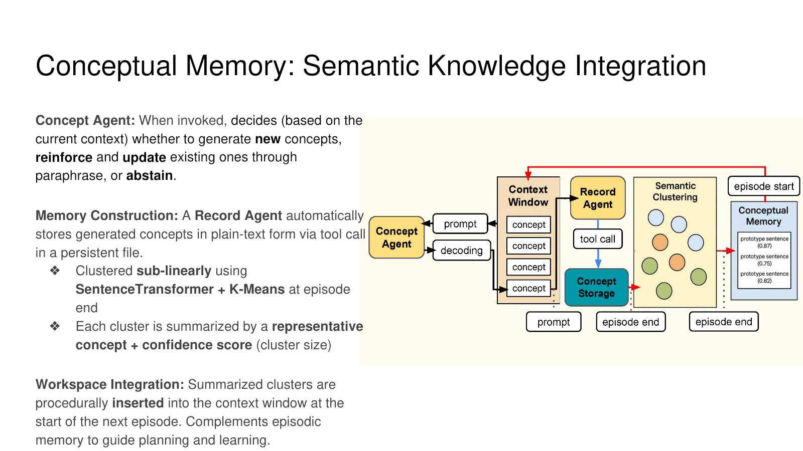
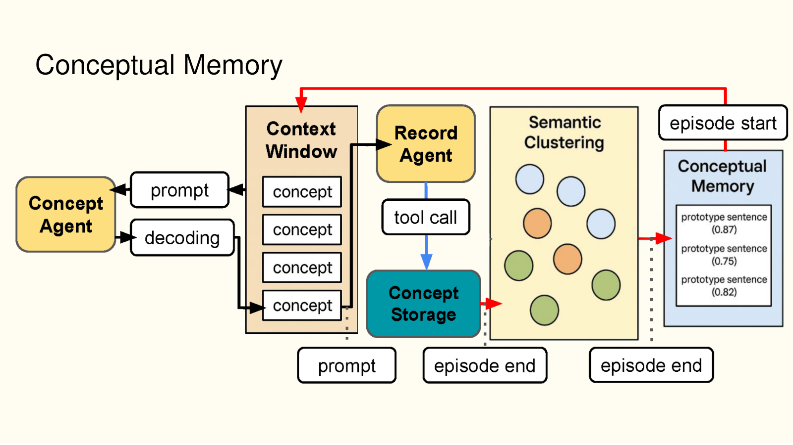
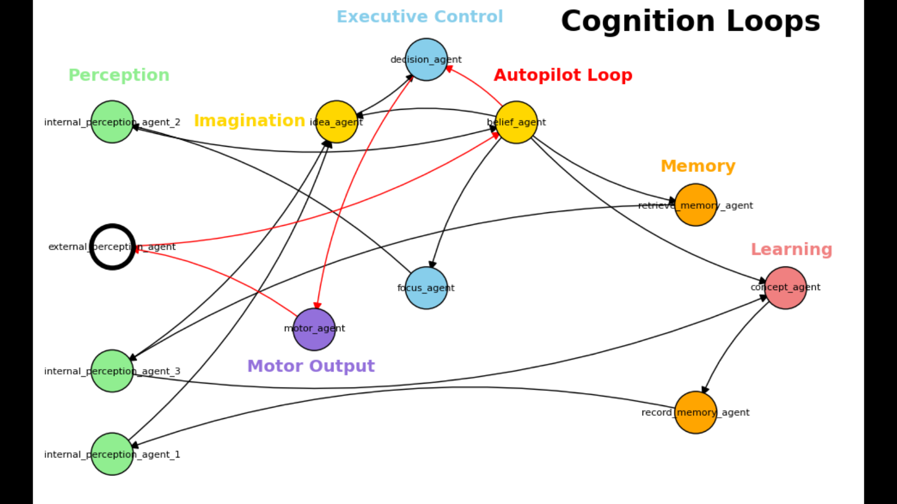
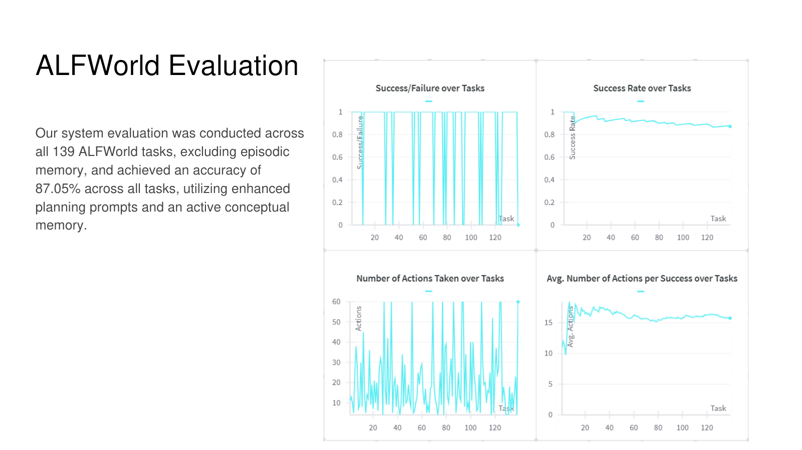
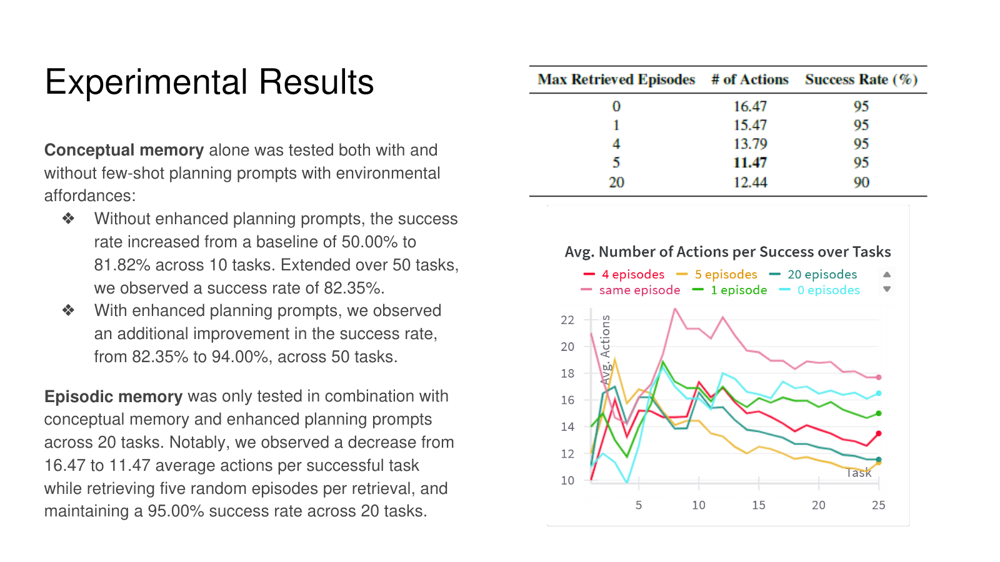
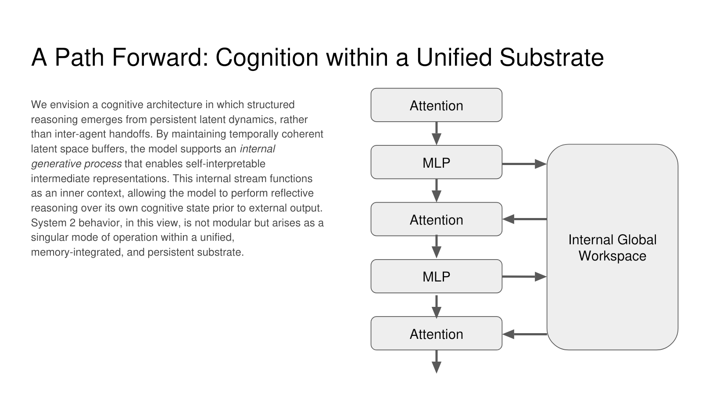
Current system
CogAgentLab connects a cognitive multi-agent runtime to environment adapters, persistent experiment records, analyst traces, and a local coding-agent workflow. The human remains responsible for deciding which changes survive.
ALFWorld, ScienceWorld, Tales, and NetHack share one evaluation surface.
Ruff, pytest, and the Docker build passed on the linked main-branch run.
Separate Claude Code and Codex prompts, branch counters, and invocation paths.
Claim-to-evidence ledger
| Statement | Primary evidence | Status |
|---|---|---|
| 121/139 historical task success | Canonical game table and generated summary | Verified |
| Raw multi-agent traces exist | Immutable historical trace tree | Verified |
| Current four-environment harness | Adapter implementation | Verified |
| Architecture used for the 139-game run | Slide-level architecture manifest and canonical game table | Verified |
| Contribution chronology and Block-sponsored project context | Attribution and chronology boundary | Owner-attested |
| Coding-agent iteration loop | Driver and merged trace-driven change stack | Verified |
The source exports are preserved byte-for-byte. The merged table, summary, and checksums are regenerated with the repository validator.
Attribution and limitations
The hackathon component research and entry were collaborative. Eduardo reports that he designed and integrated the GWT architecture from those inputs, then independently implemented the integrated system used for evaluation in a different, overlapping Block-sponsored project; Yixiao occasionally advised. Eduardo became the team's main organizer after the hackathon, but was never formally designated team leader.
The historical run used uncommitted code later captured in a same-day commit, so the exact dirty diff is unavailable. The result is auditable from metrics and traces, but not represented as a clean one-command historical reproduction.
The showcase code and original authored content have narrowly scoped licenses. Those notices do not relicense the existing CogAgentLab codebase, source exports, model outputs, or historical team material. The award certificate is not bundled. Block sponsorship and the detailed contribution chronology are disclosed as owner-attested rather than independently verified by the summit deck.
{kind=link}
{kind=link}
{kind=link}
{kind=link}
{kind=link}
{kind=link}
{kind=link}
{kind=link}
{kind=link}
{kind=link}
{kind=link}
{kind=link}
{kind=link}
{kind=link}
{kind=link}